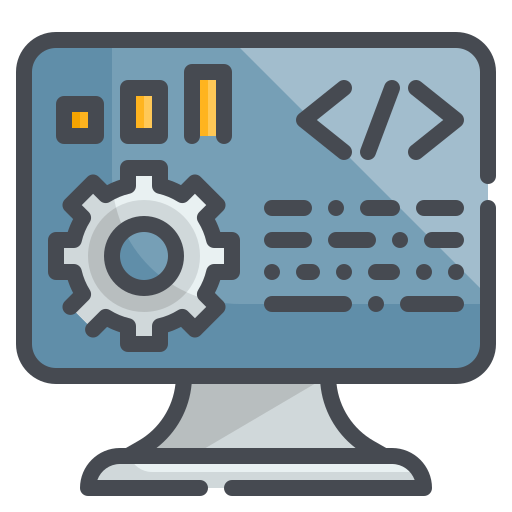
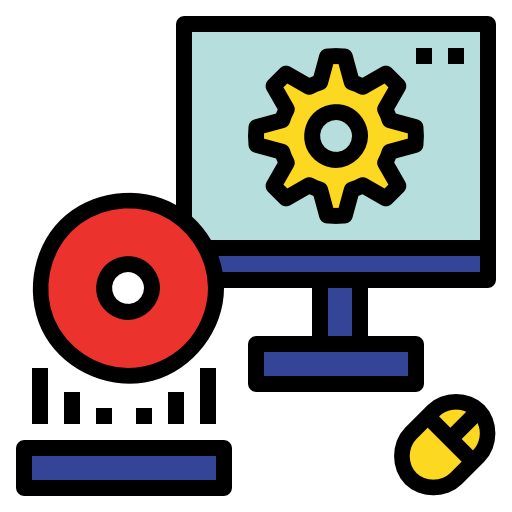
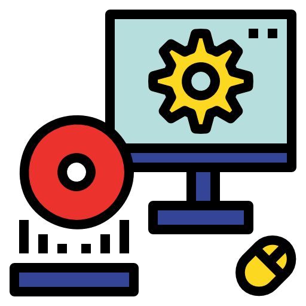
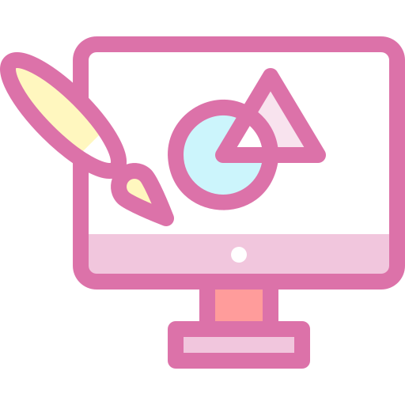
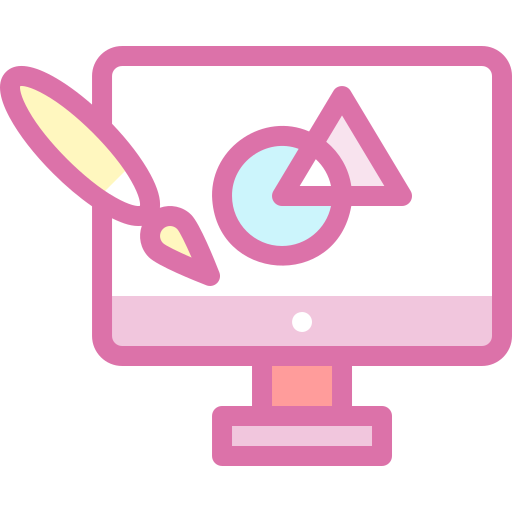

"Jesus Maria"
. Secretariado Ejecutivo . Telecomunicaciones . Sistemas Informaticos
Sistemas Informaticos
La materia de sistemas informáticos se refiere al estudio de los componentes y procesos que permiten el funcionamiento de los sistemas de computación. Incluye el análisis del hardware, que son los componentes físicos, y el software, que son los programas que utilizan esos componentes. También abarca el estudio de redes, que permite la comunicación entre sistemas, y bases de datos, que se ocupan del almacenamiento y gestión de información. Además, se enfoca en la seguridad informática para proteger los sistemas de amenazas y en el desarrollo de software, que es el proceso de crear y mantener aplicaciones. En general, esta materia proporciona una comprensión integral de cómo funcionan y se aplican los sistemas informáticos en diversas áreas.

Desarrollo de Software de Gestión: Creación de aplicaciones que optimizan procesos empresariales, facilitando la administración de recursos, clientes y proyectos.
 Desarrollo Web: Proceso de construir y mantener sitios web, abarcando desde el diseño hasta la programación y la implementación de funcionalidades interactivas.

Software-Hardware: Interacción entre programas (software) y componentes físicos (hardware) que permite el funcionamiento de dispositivos electrónicos y sistemas informáticos.
Desarrollo Web: Proceso de construir y mantener sitios web, abarcando desde el diseño hasta la programación y la implementación de funcionalidades interactivas.

Software-Hardware: Interacción entre programas (software) y componentes físicos (hardware) que permite el funcionamiento de dispositivos electrónicos y sistemas informáticos.
 Redes: Conexión de dispositivos que permite la comunicación y el intercambio de datos, utilizando protocolos y tecnologías para asegurar la transferencia de información.

Diseño Gráfico: Creación de elementos visuales para comunicar ideas y mensajes, utilizando herramientas digitales para diseñar logos, interfaces y materiales promocionales.
Redes: Conexión de dispositivos que permite la comunicación y el intercambio de datos, utilizando protocolos y tecnologías para asegurar la transferencia de información.

Diseño Gráfico: Creación de elementos visuales para comunicar ideas y mensajes, utilizando herramientas digitales para diseñar logos, interfaces y materiales promocionales.
 Programación para Dispositivos: Desarrollo de aplicaciones y software específico para dispositivos móviles y otros gadgets, optimizando su rendimiento y funcionalidad.
Programación para Dispositivos: Desarrollo de aplicaciones y software específico para dispositivos móviles y otros gadgets, optimizando su rendimiento y funcionalidad.

SISTEMAS INFORMATICOS PRIMER AÑO
Síntesis del Plan de Estudios - Primer Año en Sistemas Informáticos Programación Avanzada: Introducción a la Informática: Conceptos básicos de computación y tecnología. Historia de la informática y su evolución. Componentes de un sistema informático: hardware y software. Hardware de Computadoras: Identificación y función de los componentes físicos: CPU, memoria, almacenamiento, y periféricos. Introducción a la arquitectura de computadoras. Mantenimiento básico de hardware. Sistemas Operativos: Funciones y tipos de sistemas operativos. Navegación y gestión de archivos en sistemas operativos comunes (Windows, Linux). Comandos básicos de línea de comandos. Programación Básica: Introducción a la programación y algoritmos. Lenguajes de programación básicos (por ejemplo, Python o Java). Estructuras de control: condicionales y bucles. Desarrollo de programas simples. Desarrollo Web: Fundamentos de HTML, CSS y JavaScript. Creación de páginas web estáticas. Introducción a conceptos de diseño responsivo. Bases de Datos: Conceptos básicos de bases de datos y su importancia. Introducción a SQL y gestión de bases de datos relacionales. Creación y manipulación de bases de datos simples. Redes de Computadoras: Conceptos fundamentales de redes: tipos y topologías. Introducción a protocolos de comunicación (TCP/IP). Seguridad básica en redes. Ética y Seguridad Informática: Principios de ética en el uso de la tecnología. Conciencia sobre la seguridad informática y protección de datos. Buenas prácticas en el uso de sistemas informáticos.
SISTEMAS INFORMATICOS SEGUNDO AÑO
Síntesis del Plan de Estudios - Segundo Año en Sistemas Informáticos Programación Avanzada: Profundización en lenguajes de programación (por ejemplo, Java, C# o Python). Estructuras de datos: listas, pilas, colas, árboles y grafos. Algoritmos de búsqueda y ordenamiento. Programación orientada a objetos (POO). Desarrollo de Aplicaciones: Introducción al desarrollo de aplicaciones de escritorio y móviles. Uso de frameworks y bibliotecas para el desarrollo ágil. Integración de bases de datos en aplicaciones. Diseño de Bases de Datos: Modelado de datos y diseño de bases de datos relacionales. Normalización y desnormalización de bases de datos. Consultas avanzadas en SQL y optimización de bases de datos. Desarrollo Web Avanzado: Creación de aplicaciones web dinámicas utilizando frameworks (por ejemplo, React, Angular o Vue.js). Introducción a la programación del lado del servidor (Node.js, PHP, etc.). Gestión de sesiones y autenticación de usuarios. Redes y Seguridad Informática: Profundización en conceptos de redes: protocolos, modelos OSI y TCP/IP. Seguridad en redes: firewalls, VPNs y criptografía. Prácticas de seguridad en el desarrollo de software. Sistemas Operativos Avanzados: Administración de sistemas operativos: instalación, configuración y gestión. Conceptos de virtualización y contenedores (Docker). Introducción a la programación de scripts (Bash, PowerShell). Metodologías de Desarrollo de Software: Introducción a metodologías ágiles (Scrum, Kanban). Gestión de proyectos de software y control de versiones (Git). Pruebas de software y aseguramiento de la calidad. Ética Profesional y Responsabilidad Social: Ética en la tecnología y su impacto en la sociedad. Responsabilidad en el desarrollo y uso de software. Conciencia sobre la privacidad y la protección de datos.

SISTEMAS INFORMATICOS TERCER AÑO
Síntesis del Plan de Estudios - Tercer Año en Sistemas Informáticos Desarrollo de Software Avanzado: Diseño y arquitectura de software: patrones de diseño y principios SOLID. Desarrollo de aplicaciones distribuidas y microservicios. Integración continua y entrega continua (CI/CD). Inteligencia Artificial y Aprendizaje Automático: Fundamentos de inteligencia artificial y sus aplicaciones. Introducción al aprendizaje automático: algoritmos y técnicas. Herramientas y bibliotecas para el aprendizaje automático (por ejemplo, TensorFlow, Scikit-learn). Desarrollo de Aplicaciones Móviles: Creación de aplicaciones móviles para plataformas iOS y Android. Uso de frameworks de desarrollo móvil (React Native, Flutter). Integración de servicios web y APIs en aplicaciones móviles. Seguridad Informática Avanzada: Análisis de vulnerabilidades y pruebas de penetración. Seguridad en aplicaciones web y móviles. Normativas y estándares de seguridad (ISO, GDPR). Computación en la Nube: Introducción a la computación en la nube y sus modelos (IaaS, PaaS, SaaS). Uso de plataformas de nube (AWS, Azure, Google Cloud). Implementación y gestión de servicios en la nube. Big Data y Análisis de Datos: Fundamentos de Big Data y su importancia en la toma de decisiones. Herramientas y tecnologías para el análisis de datos (Hadoop, Spark). Visualización de datos y herramientas de BI (Tableau, Power BI). Interacción Humano-Computadora (HCI): Principios de diseño centrado en el usuario. Métodos de evaluación de usabilidad y experiencia del usuario (UX). Prototipado y diseño de interfaces de usuario. Gestión de Proyectos de Tecnología: Planificación y gestión de proyectos tecnológicos. Herramientas de gestión de proyectos (JIRA, Trello). Evaluación de riesgos y gestión de recursos en proyectos de TI.